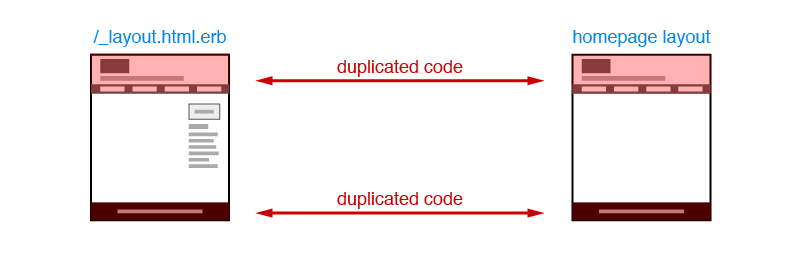
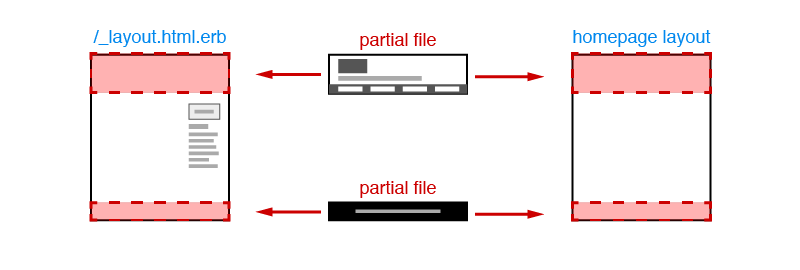

Fire.app Feature Tutorial
Using Partial Files and Specifying Layouts
In your browser, click the "Home" link in the main menu. You'll see the homepage is different from the previous design, which had no sidebar. This is because all the pages use the same layout, which has a sidebar, including the homepage. To remove the sidebar from the homepage, we need to make another specific layout for it.
It's seems the easiest way to achieve our goal is to make a homepage layout by copying & pasting the current layout's content then removing the sidebar. But if we do this, we'll get duplicated code again:
To handle this situation, we need to use partial files with the layout.
The primary use for partial files is collecting the common contents between layouts to independent files. This will efficiently avoid duplicating code.
Partial files, just like layout files, should have names with an initial underline, so they do not generate individual files after clicking "Build Project." To learn more about partial files, please check Templates, Layouts & Partials.
Next, we need to move the common parts in our layouts, like header, footer and main menu to partial files. Let's add the file _layout.html.erb to the project folder. Then, find <div class="header-wrapper"> block in _layout.html.erb, cut & paste the whole block to _header.html.erb. Save the file and we get the header's partial file:
<div class="header-wrapper">
<div class="header">
<h1 class="logo"><a href="index.html">Fire.app</a></h1>
<h2><%= lorem_sentence %></h2>
</div>
</div>
We also need to insert this into _layout.html.erb at the position we just cut <div class="header-wrapper"> previously:
<%= render :partial => "header" %>
This lets us use the content of the partial file to replace the origin header block, and the final output is the same.
Because we already prepared the other necessary partial files from the unzipped teaching material file, we only have to change the corresponding segments in _layout.html.erb to use the render partial method. All we need to change are these parts:
The _layout.html.erb should look like this:
<!DOCTYPE html>
<html>
<head>
<%= render :partial => "head" %>
</head>
<body>
<%= render :partial => "header" %>
<%= render :partial => "main_menu" %>
<div class="main-block">
<div class="main">
<%= yield %>
</div>
<div class="side">
<div class="ad">
Ad Words
</div>
<div class="links">
<h2>Information Links</h2>
<ul>
<% 8.times do %>
<li><a href="#"><%= lorem_words (4+rand(3)) %></a></li>
<% end %>
</ul>
</div>
</div>
</div>
<%= render :partial => "footer" %>
<%= livereload_js %>
</body>
</html>
In the above code, we can see <div class="side"> block doesn't use a partial file because the homepage's layout has no sidebar.
After completing these steps, we can start to deal with the layout for the homepage. Add the file _sp_layout.html.erb in the project folder and copy & paste the whole content of _layout.html.erb into it. Then, delete the whole <div class="side"> and we have finished the layout for the homepage. It should look like this:
<!DOCTYPE html>
<html>
<head>
<%= render :partial => "head" %>
</head>
<body>
<%= render :partial => "header" %>
<%= render :partial => "main_menu" %>
<div class="main-block">
<div class="main">
<%= yield %>
</div>
</div>
<%= render :partial => "footer" %>
<%= livereload_js %>
</body>
</html>
We already made _sp_layout.html.erb, the layout for our homepage, but the homepage file index.html.erb is not using it as its layout. To achieve the goal, we have to use a specific file to assign the layout. This specific file must have the same file name as the file we want to assign the layout to, but change the last part of its extension to .layout. For example, in this project we need to assign a specific layout for the homepage, and the homepage's file name is index.html.erb. So, the file we use for assigning the homepage's layout should be named index.html.erb. And the file's content is the layout's file name. In this case, the content of index.html.layout is :
_sp_layout.html.erb
Now, index.html.erb will use _sp_layout.html.erb as its layout, instead of the common layout. Switch to your browser and you'll see the sidebar in the homepage is now gone. The layout structure of this project is shown below: